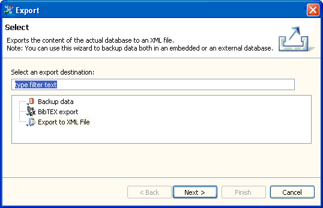

Database export and backup
The Relations application's goal is to manage your knowledge by creating and relating knowledge items.
Having put your knowledge into the appliation's workspace, you may want to make this knowledge usable
for other applications. The application offers various possibilities to achieve this:
- You can use the Print command to export selected items into a text or OpenOffice.org document.
You then can use a text processor application to process this data.
- You can use the Export to XML file wizard to export the application's content to a file in a future proof XML format.
You can use this export as backup for the actual database used by the application or to transfer the content to another Relations database.
You might even apply an XSL transformation and use the exported data in a completely different application.
- You can use the BibTEX export wizard to export all Text items into a
BibTEX file for that it can
be imported into a LaTEX document.
- You can use the Backup data wizard to create a backup of the embedded database you actually use. If something goes wrong
with the application data, you can restore the state of the last backup.

The application's export and backup wizards